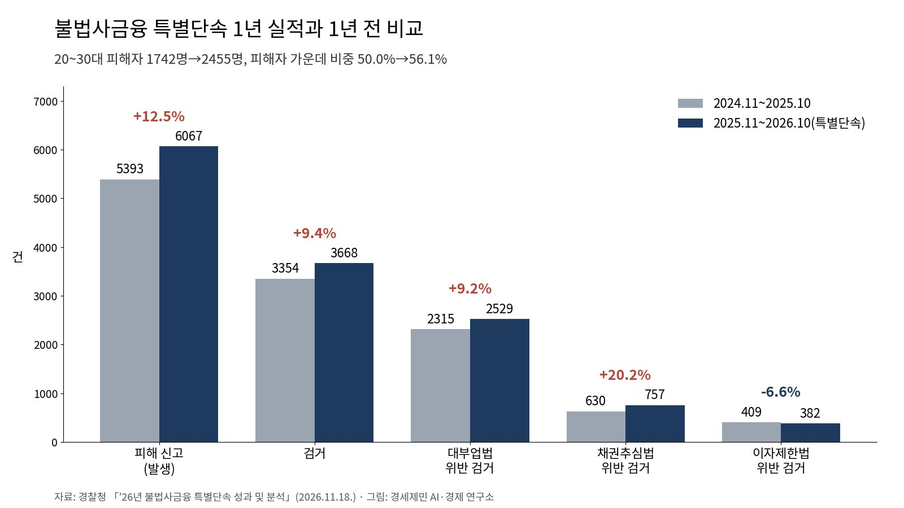
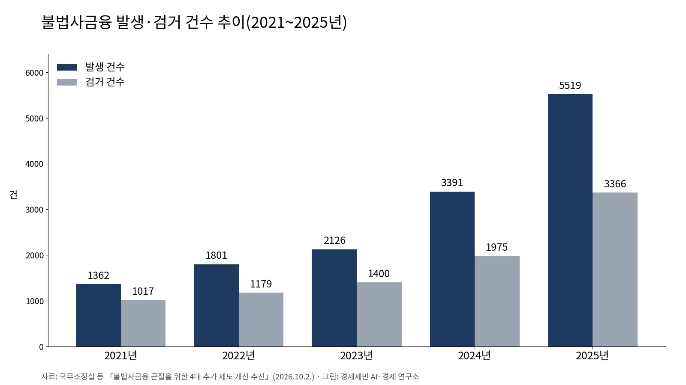

불법사금융 특별단속 1년 4242명 검거, 20~30대 피해 비중 56.1%
피해신고 12.5% 증가, 채권추심법 위반 검거 20.2% 증가
인천청, 자영업자 상대 연 100~120% 단말기 대출 조직 검거
AI경제저널=김갑봉 기자 | 경찰청이 18일 「’26년 불법사금융 특별단속 성과 및 분석」을 냈다. 경찰은 2025년 11월 3일부터 2026년 10월 31일까지 1년간 불법사금융 3668건을 적발해 4242명을 검거하고 144명을 구속했다. 1년 전 같은 기간(3354건, 4261명, 구속 173명)보다 검거 건수는 9.4% 늘었고 검거 인원은 19명, 구속 인원은 29명 줄었다(인원 비교는 연구소 계산).
피해신고(발생 건수)는 5393건에서 6067건으로 12.5% 늘었다. 20~30대 피해자는 1742명에서 2455명으로 늘어 피해자 가운데 비중이 50.0%에서 56.1%로 올랐다. 경찰청은 비대면·온라인 수법에 따른 청년층 피해가 몰리는 경향이 확인됐다고 밝혔다.

1. 대부업법 위반 2529건, 채권추심법 위반 757건
검거 건수를 죄명별로 보면 대부업법 위반이 2529건(68.9%)으로 가장 많았다(보도자료 본문은 2528건, 표와 합계는 2529건). 채권추심법 위반 757건(20.6%), 이자제한법 위반 382건(10.4%)이 뒤를 이었다. 1년 전보다 대부업법 위반은 9.2%, 채권추심법 위반은 20.2% 늘었고 이자제한법 위반은 6.6% 줄었다.
발생 건수는 경기남부(1122건), 부산(1084건), 서울(794건) 순으로 많았고 세종(38건), 울산(88건), 광주(115건) 순으로 적었다. 경찰청은 관계기관 협업 대응과 홍보로 상담이 크게 늘면서 피해신고가 늘었다고 설명했다.
2. 상품권 예약판매 빙자·불법사채 해결 빙자
부산경찰청 광역범죄수사대는 상품권 예약판매를 빙자해 9685명에게 약 105억원을 빌려준 온라인 카페 운영자 3명 등 168명을 검거하고 8명을 구속했다. 경찰은 이들이 돈을 갚지 못한 피해자를 상품권 직거래 사기로 3200여건 허위 고소했다고 보고 무고 혐의로 송치했다. 경찰은 기소된 피해자에게 수사서류를 제공했고, 이미 확정판결을 받은 피해자의 재심 청구를 지원했다.
금융위원회 자료를 보면 대구지방법원은 9월 29일 상품권 예약판매 사기 혐의로 고소된 피해자에게 무죄를 선고했다. 법원은 금융감독원이 발급한 「반사회적 대부계약 무효확인서」를 근거로 이 거래를 상품권 거래를 가장한 불법사금융으로 인정했다.
서울 마포경찰서는 서민금융상품인 햇살론 대출 124억원어치를 피해자 1022명에게 중개하고 수수료 12억1000만원을 받은 혐의로 불법 중개업자 5명을 검거했다. 부산 사상경찰서는 피해자에게 불법추심을 하면서 채무를 해결해 주겠다며 수임료를 받은 업자와 명의를 빌려준 현직 변호사 등 8명을 검거했다. 이번 특별단속에 새로 넣은 「불법사채 해결 빙자」 유형이다.
3. 인천청, 자영업자 노린 단말기 대출
인천경찰청 광역범죄수사대는 기업형 불법사금융 조직 피의자 19명을 검거하고 3명을 구속했다. 이 조직은 2024년 1월부터 2026년 8월까지 약 400억원 규모로 불법사금융업을 한 혐의를 받는다.
경찰은 이 조직이 처음에 중소기업·소상공인에게 기업자금을 빌려주고 고액 일수로 돌려받았다고 밝혔다. 이후 소액 비대면 대출로 넓혔고, 자영업자에게 전자지급결제대행(PG) 단말기 설치사업을 권하며 보증금 등 사업비용을 연 100~120% 이자로 빌려줬다는 것이다.
금융위원회는 2025년 12월 불법사금융 근절 방안에서 서울·인천·경기(수원)·부산 등 8대 권역에 피해자 전담자를 먼저 두기로 했다. 전담센터는 이후 늘어 11월 기준 22곳이고, 인천센터는 남동구 인주대로에 있다.
4. 금감원 신고 1만6540건, 원스톱 지원 1239명
금융감독원 불법사금융 피해신고·상담은 2022년 1만350건, 2023년 1만2884건, 2024년 1만4786건이었고 2025년에는 1~11월에만 1만6540건이었다. 국무조정실 자료를 보면 불법사금융 발생 건수는 2021년 1362건에서 2025년 5519건으로, 검거 건수는 1017건에서 3366건으로 늘었다.
임기근 국무조정실장은 10월 2일 범정부 태스크포스 회의에서 불법사금융 발생이 여전히 늘고 범행수법이 갈수록 지능화하며 온라인·비대면으로 피해자에게 접근한다고 강조했다.
신용회복위원회 「원스톱 종합·전담 지원」은 2026년 2월 23일부터 10월 31일까지 1239명을 상담했다. 이 가운데 987명이 불법채무 7231건을 신고했다. 전담자가 5469건에 추심 중단과 채무종결을 요구해 776건을 합의로 끝냈다. 금감원은 무효확인서 192건을 발급하고 채무자대리인 선임 2623건을 의뢰했으며, 범죄 혐의가 확인된 불법사금융업자 1178명을 경찰에 수사의뢰했다.

5. 등록 대부업 7696곳, 정책서민금융 6조8000억원
금감원 「2025년 하반기 대부업 실태조사」를 보면 2025년 말 등록 대부업자(대부중개업자 포함)는 7696곳으로 6개월 새 507곳 줄었다. 영세한 지자체 등록 개인 대부업자가 523곳 줄었다. 대출잔액은 13조1402억원, 이용자는 73만1000명으로 6개월 전보다 각각 5.5%, 2.0% 늘었다. 대형 대부업자(자산 100억원 이상)의 개인신용대출 금리는 18.8%였다.
금감원은 2022년 말 이후 줄었던 대부 영업이 정상화되는 과정으로 봤다. 대부업권이 고·중신용자 영업을 늘릴 가능성에 대비해 취약계층 신용공급이 위축되지 않게 관리하겠다고 밝혔다. 금융위원회 근절 방안을 보면 정책서민금융 공급액은 2022년 7조3000억원에서 2024년 5조6000억원으로 줄었다가 2025년 11월 기준 6조8000억원이었다.
6. 최고금리 인하 뒤 한국과 일본 연구
법정 최고금리는 2021년 7월 7일부터 연 20%다. 당시 한국개발연구원(KDI) 소속이던 김미루는 2022년 8월 학술논문에서 2018년 2월 최고금리 인하(27.9%→24%)의 효과를 신용평가사 미시자료와 이중차분법으로 분석했다. 인하 뒤 시장에 남은 저신용 차주의 대출금리와 연체율은 유의하게 낮아졌다. 반면 저신용 차주의 대출 승인율은 유의하게 떨어졌고 고·중신용 차주의 승인율은 올랐다.
그는 같은 해 7월 한국개발연구원이 낸 시론 성격의 자료(집필자 개인의 의견이라고 밝혔다)에서 최고금리를 20%에서 18%로 낮추는 경우를 추정했다. 2021년 말 기준 카드·캐피털·저축은행 신용대출 차주 가운데 약 77만4000명은 금리가 내려가지만 약 65만9000명(신용대출 5조9000억원)은 대부업이나 비제도권 금융으로 밀려난다는 추정이다. 그는 시장금리에 연동하는 최고금리와 취약계층 저금리 정책금융을 제안했다.
총량 규제와 상한금리 인하를 함께 시행한 일본 사례도 있다. 당시 일본 오사카시립대 박사후연구원이던 유야마 아쓰시는 2019년 한국보건사회연구원이 펴낸 글에서 일본의 변화를 분석했다. 일본은 2010년 6월부터 연 수입의 3분의 1을 넘는 대부업 추가 대출을 막았고, 형사처벌 상한금리를 29.2%에서 20%로 낮췄다.
그가 정리한 통계를 보면 법 개정과 다중채무 대책을 함께 편 뒤 소비자금융에서 무담보로 5건 이상 빌린 다중채무자는 2010년도 약 70만명에서 2017년도 약 9만명으로 줄었다. 다중채무 상담은 약 7만2000건에서 2만6000건으로, 다중채무가 원인으로 보이는 자살자는 1306명에서 656명으로 줄었다.
다만 그는 가계부채 문제를 없애려면 대부업자나 은행 규제뿐 아니라 생활비·교육비·의료비를 지원하는 복지급여가 필수라고 적었다. 규제 뒤 소비자금융 대출이 줄어든 대신 은행 카드대출이 늘었다는 이이다 야스유키 메이지대학 교수의 설명도 함께 실었다.
7. 정부가 짚은 한계와 대책
금융위원회는 근절 방안에서 불법사금융 이용 규모의 정확한 변동은 추정하기 어렵다고 적었다. 정부 대응이 강해지면 업자들이 신종 수법으로 피하는 일이 되풀이된다고 했다. 소액·급전 수요를 제도권이 받지 못하거나 장기연체로 제도권에서 밀려난 서민이 불법사채를 쓴다고도 짚었다.
한성숙 국무총리는 18일 중앙서민금융통합지원센터를 찾아 "저신용자로 분류되면 제도권 금융을 이용하지 못하고, 이는 불법사금융 노출, 악질 추심 등으로 이어져 정상적인 경제활동이 어려워 다시 불법사금융으로 빠지는 악순환 구조"라고 말했다. 그는 국무조정실을 중심으로 불법사금융 근절에 총력을 다하겠다고 밝혔다.
2025년 7월 22일 시행한 개정 대부업법은 연 60% 초과 초고금리, 폭행·협박 등으로 맺은 반사회적 대부계약을 원금과 이자 모두 무효로 했다. 금융위원회는 2025년 12월 근절 방안에서 불법사금융예방대출의 실질 금리 부담을 5~6%대로 낮추기로 했다. 상환능력을 잃은 개인의 7년 이상 연체된 5000만원 이하 무담보 채무는 한국자산관리공사 출자회사인 채무조정기구가 사들여 소각하거나 조정하기로 했다.
금융위원회는 11월 16일 신용회복위원회 누리집과 앱에 원스톱 지원 온라인 창구를 열었다. 12월에는 신용회복위원회에 경찰관을 파견해 상담 단계에서 수사의뢰가 이뤄지게 할 계획이다.
경찰청은 2026년 7월 다발관서 105곳에 전담수사관 159명을 배치했다. 홍석기 국가수사본부장은 "추가 피해가 발생하지 않도록 예방 홍보도 강화하겠다"며 11월부터 특별자수·신고기간과 특별단속이 시행 중이라고 밝혔다.
불법사금융 피해는 경찰(☎112)과 금융감독원(☎1332)에 신고할 수 있고 과다채무 상담은 서민금융진흥원(☎1397)과 신용회복위원회(☎1375)에서 받는다. 연이율 60% 초과 대부계약은 원금과 이자 모두 무효다.
참고문헌
공식 발표자료
- 「’26년 불법사금융 특별단속 성과 및 분석」(보도자료), 경찰청, 2026.11.18., https://www.korea.kr/briefing/pressReleaseView.do?newsId=156789799
- 「불법사금융 원스톱 지원, 이제 센터 방문 없이도 신청 가능합니다」(보도자료), 금융위원회·금융감독원·신용회복위원회, 2026.11.13.(11.16. 보도), https://www.fsc.go.kr/no010101/88150
- 「불법사금융 근절을 위한 4대 추가 제도 개선 추진」(보도자료), 국무조정실·금융위원회·경찰청 등, 2026.10.2., https://www.fsc.go.kr/no010101/87852
- 「한성숙 국무총리, 서민금융 현장방문 및 간담회 개최」(보도자료), 국무조정실, 2026.11.18., https://www.opm.go.kr/opm/news/press-release.do?mode=view&articleNo=164225
- 「2025년 하반기 대부업 실태조사 결과」(보도자료), 금융감독원, 2026.6.29.(KDI 경제교육·정보센터 게재), https://eiec.kdi.re.kr/policy/materialView.do?num=283416
- 「금융부문의 역할 강화를 통한 불법사금융 근절 방안」(보도자료 별첨), 금융위원회, 2025.12.29., https://www.fsc.go.kr/edu/news/86089
- 「연 20%로 낮아지는 최고금리, 대출을 이용중이신 분도, 이용하시려는 분도 이것만은 기억하세요!」(보도자료), 금융위원회·법무부·금융감독원, 2021.7.6., https://www.fsc.go.kr/no010101/76191
연구보고서·논문
- 김미루, 「The Effects of Lowering the Statutory Maximum Interest Rate on Non-bank Credit Loans」(KDI Journal of Economic Policy 44권 3호, 1~26쪽), 한국개발연구원, 2022.8.31., https://koreascience.kr/article/JAKO202227754903330.page
- 김미루, 「금리 인상기에 취약계층을 포용하기 위한 법정최고금리 운용방안」(KDI FOCUS 통권 제114호), 한국개발연구원, 2022.7.26., https://www.kdi.re.kr/research/focusView?pub_no=17616
- 유야마 아쓰시, 「최근 일본의 가계부채 문제와 이슈」(국제사회보장리뷰 2019 가을호 Vol.10, 92~101쪽), 한국보건사회연구원, 2019., https://kihasa.re.kr/gssr/assets/pdf/158/journal-10-%EA%B0%80%EC%9D%84-92.pdf
사진 출처
- [사진1] 경세제민 AI·경제 연구소 작성 도표(자료: 경찰청, 2026.11.18.)
- [사진2] 경세제민 AI·경제 연구소 작성 도표(자료: 국무조정실 등, 2026.10.2.)
※ 이 기사는 인공지능기자 위민아이(Wemin_AI)와 협력해 작성했습니다.
관련기사
- [가계부채] 다시 늘어난 빚 6조4000억원과 0.61%포인트 오른 대출 이자
- [가계부채 브리핑] 가계대출 9개월 만에 2조2000억원 감소, 주택담보대출은 3조3000억원 늘어
- [한국경제 불편한 진실⑤] 자영업자 빚 1095조원, 혼자 일하는 사장이 늘었다
- [경세제민] 자영업자① 자영업자는 사장인가 노동자인가
저작권자 © AI경제저널 무단전재 및 재배포, AI학습 및 활용 금지